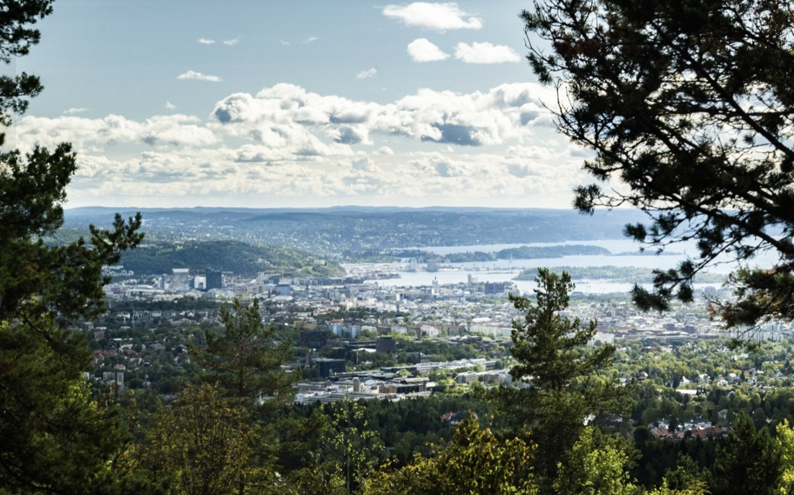

Vettakollen is the hilltop Oslo locals climb when they want the whole city at their feet. It sits right where the houses end and Nordmarka begins, so you can ride the metro from the centre, walk up through the forest and be looking down over the rooftops, the harbour and the islands of the Oslofjord. In winter, with snow on the trees and low sun over the fjord, it's one of the best short walks the city has.
Vettakollen at a glance
- Getting there: metro line 1 towards Frognerseteren to Vettakollen station, about 20 minutes from the city centre
- Ticket: a standard Ruter zone 1 ticket, bought in the Ruter app
- The walk: about 30–45 minutes uphill from the station, a bit less back down
- Difficulty: easy overall, with short steep and rocky parts near the top
- In winter: bring ice spikes, start before noon and be down before dark
How to get to Vettakollen
Take metro line 1 — the Holmenkollen line, towards Frognerseteren — from any central station such as Nationaltheatret or Stortinget, and get off at Vettakollen. The ride is a good start in itself: the train climbs the hillside and the city falls away beneath you.
From the station, the route goes uphill through a quiet residential area and then into the forest to the top. It's signposted in places but not everywhere, so it's worth having a map on your phone — search for “Vettakollen” in Google Maps, or use UT.no, the Norwegian hiking app from the Norwegian Trekking Association.
What you'll see from the top
The top of Vettakollen is an open, rocky knoll facing south. Below you is the whole of Oslo: the city centre, the harbour, the green hills on either side and the Oslofjord stretching away with its islands. On very clear days you can see far beyond the fjord. It's a classic spot for a thermos break — and in winter, for watching the sun sit low over the water in the middle of the day.

Vettakollen in winter: what's different
- Ice. The paths are usually packed snow, and the steep rocky parts near the top can be icy. Slip-on ice spikes (brodder) are the single most useful thing you can bring — sports shops and many supermarkets in Oslo sell them.
- Daylight. In December the sun sets around 15:15 in Oslo, and it's dark soon after. Start in the late morning and plan to be back at the station by mid-afternoon. A headlamp in your pocket is a good idea.
- Cold at the top. You'll warm up on the climb and cool down fast once you stop. Bring an extra layer and something hot to drink. Our winter clothing guide has the details.
- Ski tracks. Nordmarka is full of prepared cross-country ski tracks in winter. Walk beside them, never in them — it's the one bit of local etiquette everyone notices.
- Fresh snow. After a heavy snowfall the path may not be trodden yet. If it looks unclear, turn back and try again another day, or come with a guide.
Make a day of it
Vettakollen is on the same metro line as Holmenkollen, with its famous ski jump and ski museum, and Frognerseteren at the end of the line, where the old timber restaurant is known for its apple cake. Go up Vettakollen in the morning, continue up the line in the afternoon and ride back into the city as the lights come on. Our guide to things to do in Oslo in winter has more ideas.
And in summer?
Vettakollen is an easy summer walk too — green, shady and good for a picnic at the top, with long evenings that let you stay for the light. The route is the same; you just don't need the spikes.
Prefer to go with a guide?
On our Winter Forest Hike we ride the metro up to Nordmarka together and walk into the snowy forest, with snowshoes or ice spikes provided — and a viewpoint over Oslo and the fjord when the weather allows. Private, just your group, about 4 hours. Or end the day by the fire on our Campfire Evening Walk.
Frequently asked questions
Can you get to Vettakollen by public transport?
Yes. Take metro line 1 towards Frognerseteren to Vettakollen station, about 20 minutes from the city centre. The viewpoint is a walk uphill from the station. A standard Ruter zone 1 ticket covers the trip.
How long does the Vettakollen hike take?
Allow about 30–45 minutes uphill from Vettakollen station and a little less on the way down — so 1.5 to 2 hours return with time at the top. In snow or ice, give yourself extra time.
Is Vettakollen hard to climb?
No. It's a short hike that most people can manage, but the last part is steep and rocky in places. In winter those sections can be icy, which is what makes ice spikes worth having.
Do I need ice spikes for Vettakollen in winter?
We'd strongly recommend them. The paths are often packed snow or ice, and the steep sections near the top are slippery. Slip-on ice spikes (brodder) are sold in sports shops and many supermarkets in Oslo.
Is Vettakollen worth it in winter?
Yes, on a clear day. Low winter sun over a snowy city and a frozen-edged fjord is one of the best views Oslo has. On grey, snowy days the view can disappear — then it's a forest walk instead, which is lovely too.